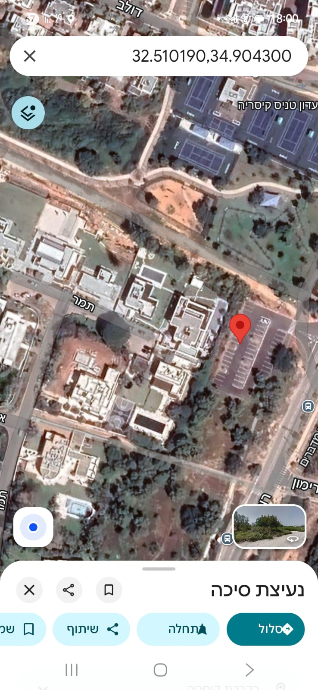

צוות חמני היקר,
חלפו כחודשיים מאז שהתחלנו את הקשר: שיחה עם עדי מהעמותה, פגישה עם קבוצת המובילים, הזום המשותף של כולנו, השאלונים והשיחות האישיות. דרך כל אלה הכרנו אתכם, את סיפור הצוות, את מה שמעסיק אתכם ואת הבקשות שלכם - להתקרב, להיזכר ולהתחדש בקשר.
מתוך מה ששמענו, קראנו והבנו כבקשות העומק שלכם, בנינו מהלך שמותאם לכם. אנחנו מתרגשים לצעוד אתכם את הימים הקרובים בסופ״ש בקיסריה.
אז ברוכים הבאים לכפר מעבר.
אחרי השנים האחרונות כולנו זקוקים לרגע של נשימה. חלקכם עדיין במילואים וחלקכם כבר לא, חלקכם הייתם בלחימה לאחרונה וחלקכם לא - והשנים האלה נגעו בכל אחד מכם ובקשרים ביניכם, כחברים וכצוות. המרחב הזה נועד עבור כולכם: מקום שבו אפשר להאט, להוריד מהדריכות, לפגוש את מה שכל אחד סוחב איתו, ופשוט להיות ביחד - בדרכים מוכרות וגם בחדשות.
במהלך שלושת הימים נאסוף את החלקים השונים שמרכיבים את הצוות, נעשה מקום לדברים שפחות מדוברים ביום־יום, ונאפשר התחדשות, חיבור ועיצוב של העתיד המשותף.
המכתב הזה מרכז את כל מה שכדאי לדעת לפני שמגיעים. קחו לעצמכם כמה דקות שקטות וקראו בעיון.
הסמינר יתקיים בקיסריה, במרחב מיוחד ומוקפד שנתרם לכם על ידי משפחת רפפורט. המקום פרטי ושקט, מנותק מהרעש היומיומי, ומאפשר לנו לעבוד לעומק.
המהלך בנוי משלושה ימים, ולמעשה משלושה חלקים.
ביום הראשון ניצור תשתית של ביטחון, שייכות ושקט, ונכיר כמה שפות שיאפשרו לגלות תנועות חדשות - בין כל אחד מכם לעצמו ולגופו, וביניכם, חברי הצוות.
ביום השני נעמיק: נרכך במידה את שכבת ההרגלים ואת המושגים השחוקים על עצמנו ואחד על השני, ונאמן את עצמנו להיכנס לעולמו של האחר ולהקשיב. נעשה זאת בעיקר דרך גישה סיפורית, שנותנת מקום נפרד ומובחן לסיפור האישי של כל אחד מכם. נעבוד בכמה פעימות: בכל פעימה כמה מכם יחלקו סיפור, אירוע או נקודת מבט, ויחד נחבר מחדש את התמונה המשותפת שבין כל הסיפורים.
בין פעימות הסיפורים נשלב פעילויות גוף מונחות - נשימה, חשיפה לקור וקצב - שיפתחו מפגש מסוג אחר עם הגוף ואחד עם השני.
ביום שבת בבוקר נשלים את מעגל הסיפורים. את המשך היום נקדיש לעיבוד ולהטמעה של מה שלמדנו, ולחזרה הביתה עם כלים מעשיים ושפה משותפת. לקראת הסיום נפנה מבט קדימה - אל העתיד ואל שאלת הזהות האישית והצוותית.
כדי לעשות מקום נעים לאחים הדתיים, מצד ההנחיה הסמינר כולו יהיה שומר שבת.
כדי שנוכל לצלול לעומק בביטחון, אנחנו מסכימים מראש על כמה כללים פשוטים:

צילום מסך של החנייה — לחצו להגדלה קישור לוויז לווילה (התמר 5)ניפגש שוב כדי לחבר את מה שנפתח בסמינר אל המעבר הביתה.
יום חמישי, 19/11/2026, בשעות 19:00-22:00 באיזור השרון. מיקום מדויק יימסר בהמשך. שריינו כבר עכשיו ביומן: שמירה ביומן גוגל
מקווים לזמן נעים, רך ומזין ביחד - זמן שמחבר אותנו פנימה ובינינו.
אנחנו מחכים לכם, מעריכים את האמון ומתרגשים לקראת המסע המשותף.
שלכם,
צוות כפר מעבר - אלעד, זאק, אורי, תומר, דני, עופר ודור